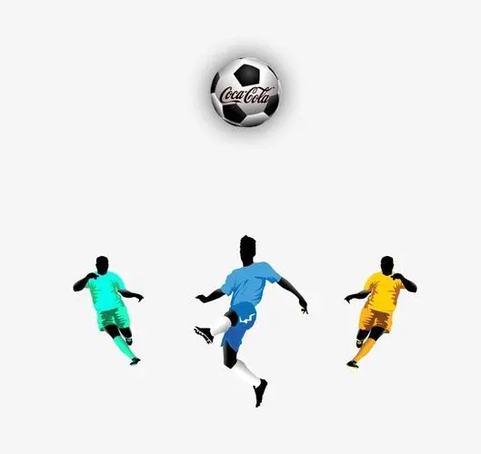
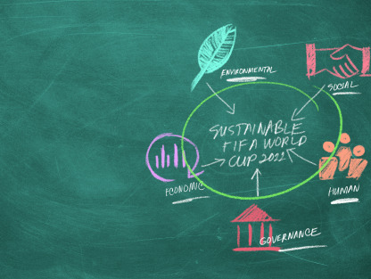
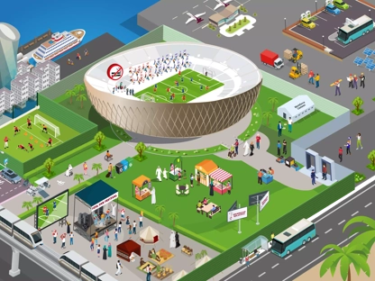
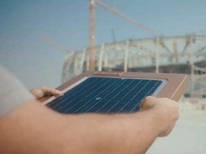
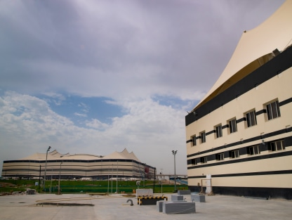
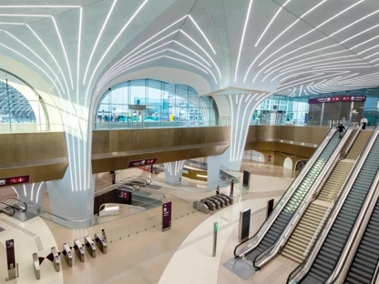

拯救地球：
足球是我们呼吸的空气。
足球在应对世界上最大的全球性挑战中发挥着重要作用。 随着危险天气事件变得越来越频繁和严重，气候变化将影响我们每一个人。
拯救地球是一项环保承诺，2022年国际足联世界杯将用它来团结全球足球界对抗气候变化。 它将汇集数十亿人的声音，以加强我们生活中的挑战，并为后代采取行动。
2022年国际足联世界杯与拯救地球
国际足联与东道国一道，正在实施卡塔尔世界杯历史上最雄心勃勃的环境项目，并致力于确保该地区和世界各地的气候保护遗产。

国际足联世界杯可持续性进展报告
了解我们如何最大化比赛对人类和环境的贡献。

交互式可持续地图
从可持续建造的体育场到太阳能，从回收利用到可重复使用的食品服务产品，点击我们的交互式可持续地图，了解2022年国际足联世界杯是如何减少其在地球上的足迹的。
碳管理
了解我们如何实施减少和抵消2022年国际足联世界杯相关温室气体排放的计划。

卡塔尔可再生能源倡议
了解我们如何最大化比赛对人类和环境的贡献。

交互式可持续地图
从可持续建造的体育场到太阳能，从回收利用到可重复使用的食品服务产品，点击我们的交互式可持续地图，了解2022年国际足联世界杯是如何减少其在地球上的足迹的。

碳管理
了解我们如何实施减少和抵消2022年国际足联世界杯相关温室气体排放的计划。